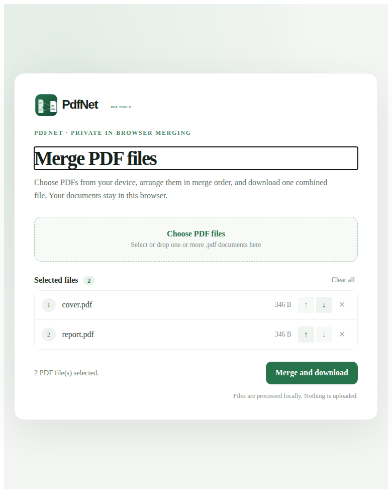
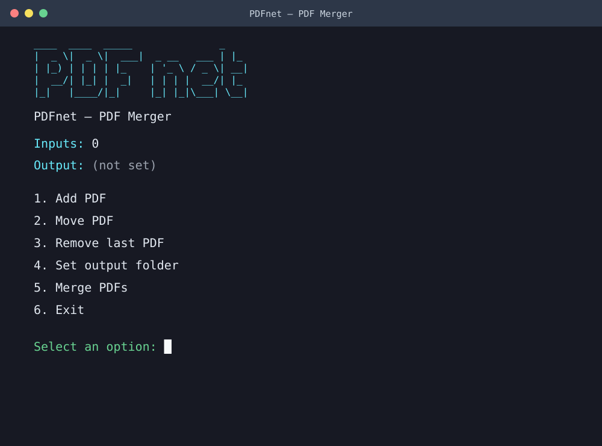

NO INSTALL NEEDED
In your browser
The quickest way to turn a handful of PDFs into one. Powered by Blazor WebAssembly, with all merging done on your device.
A modern browser · Windows, macOS or Linux

SMALL TOOLS. SIMPLER DOCUMENTS.
Bring your documents together, without the extra steps. Simple PDF merging in your browser, on your desktop, or from your terminal.
No install for the browser app. No document uploads.
Local processing Your files stay with you.
Predictable order Pages follow your inputs.
One .NET core Different ways to work.
THE PDFNET TOOLKIT
From a quick browser merge to a repeatable folder task. Pick the tool that fits the way you work.
The quickest way to turn a handful of PDFs into one. Powered by Blazor WebAssembly, with all merging done on your device.
A modern browser · Windows, macOS or Linux

A native Windows window for selecting PDFs, saving a combined file, and opening it in your default viewer.
Point, click, merge, open.
Prefer a classic Windows interface? The same straightforward merge-and-open workflow, in a familiar form.
A classic UI. The same PDF engine.
A modern Windows App SDK interface with the same ordered PDF selection, merge, and open workflow.
A modern UI. The same PDF engine.
A small, interactive menu. Add and reorder PDF paths, choose your destination, and merge without leaving the terminal.
Linux · Windows · macOS
One folder in, one PDF out. Combine its top-level PDFs in filename order with a single command.
Linux · Windows · macOS
FROM FILES TO FINISHED
Every app uses the same merge engine. Pages are appended in input order; the folder tool chooses that order by filename.
Choose the matching app and platform archive from a GitHub release. Extract the entire archive before running it. These self-contained apps do not need a separate .NET installation.
Browse releasesThe commands below run from a cloned repository and require the .NET 10 SDK. The Windows desktop projects also require Windows.
merged.pdf.Up to 100 PDFs, 100 MB per file, and 200 MB total. Non-PDF selections are rejected without changing the existing list. Documents are processed locally, not uploaded to a server. Reloading the page clears the selection.
To run from source:
dotnet run --project src/PdfNet.WasmPdfNet.Wpf.exe, or run the source command below.Multiple selected PDFs move together, preserving their relative order; movement stops at the beginning or end of the list. Choose an output path different from every selected input. The app rejects a destination that would overwrite one of its sources.
dotnet run --project src/PdfNet.WpfPdfNet.WinForms.exe, or run the source command below.Multiple selected PDFs keep their relative order when moved; movement stops at either end of the list. Like the WPF app, WinForms prevents you from saving the merged file over a selected input.
dotnet run --project src/PdfNet.WinFormsPdfNet.WinUI.exe, or run the source command below.Selected PDFs move together, preserving their relative order; movement stops at the beginning or end of the list. The app rejects a destination that would overwrite one of its inputs.
dotnet run --project src/PdfNet.WinUI./PdfNet.Tui (or PdfNet.Tui.exe on Windows), or use the source command below../reports, then choose 5. Merge PDFs to save merged.pdf inside it. Option 6 exits.Paths may be surrounded by matching single or double quotes, including Windows paths such as "D:\PDF files\input.pdf". Choose an existing writable output folder, not a filename. The app protects selected inputs from being overwritten. Relative paths start at the app's current working directory. Merge exceptions appear in red in the terminal; redirected output remains plain text.
dotnet run --project src/PdfNet.TuiTo skip the menu, pass an existing output folder and individual PDFs in merge order. The result is merged.pdf in that folder; use --help for usage.
dotnet run --project src/PdfNet.Tui -- --output ./results "cover page.pdf" report.pdf
Prefer a global tool? Download both the PdfNet.Tui and PdfNet NuGet packages from the same release into ./downloads. Replace 0.1.0 below with that release's version. This option needs the .NET 10 runtime.
dotnet tool install --global PdfNet.Tui --version 0.1.0 --add-source ./downloads
pdfnet01-cover.pdf and 02-report.pdf to control the order.merged.pdf inside it. Supply a second argument for a different destination.From source:
dotnet run --file src/PdfNet.FolderMerge.cs -- ./reports
dotnet run --file src/PdfNet.FolderMerge.cs -- ./reports ./combined.pdfOr extract the folder-merge archive and run its executable:
./PdfNet.FolderMerge ./reports ./combined.pdfOn Windows, use PdfNet.FolderMerge.exe instead.
Only top-level PDFs are included, not subfolders. Omit the directory to use the current directory. An explicit relative output path starts at the current working directory, not the input folder. A folder without PDFs produces an error.
Use the same engine in your own .NET 10 application. In a cloned repository, add a project reference (adjust the paths for your app):
dotnet add ./YourApp/YourApp.csproj reference ./src/PdfNet/PdfNet.csprojAlternatively, download the PdfNet NuGet package from a release and use that folder as a local package source. Packages are not automatically published to NuGet.org.
Merge files in the order you supply them:
using PdfNet;
PdfMerger.Merge(["cover.pdf", "report.pdf"], "merged.pdf");Working in memory? Use byte arrays or streams, with optional document metadata:
byte[] merged = PdfMerger.Merge([
File.ReadAllBytes("cover.pdf"),
File.ReadAllBytes("report.pdf")
]);
using var output = File.Create("merged.pdf");
PdfMerger.Merge([streamA, streamB], output, new PdfMergeOptions
{
Title = "Combined report",
Author = "Your team",
SkipEmptyDocuments = true
});File-based merges replace the destination only after success. The stream overload leaves your streams open. Unreadable inputs throw PdfMergeException; missing files throw FileNotFoundException.
GO A LITTLE DEEPER
LESS ADMIN. MORE DONE.
Your next combined PDF is a few clicks away.